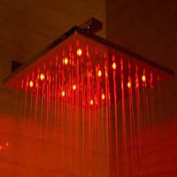

Square Multi Color LED Rain Shower Head
Square Multi Color LED Rain Shower Head
Description
No Batteries! This high tech rain shower head powers the LED lights using a built in hidden dynamo.
Auto Temperature Detected Light Color Change! The shower head will automatically change colors according to the temperature of the water.
Never be scalded again by entering a shower that is just too hot!
Standard size. Replace your old shower head with this exciting new product. The threading is universal so it will fit any standard shower head.
Modern Stylish Design. Completely polished chrome made to match or stand out from your other bathroom fixtures.
In Stock
Price $200.00
Customer Reviews
Use top replace older rain tile that failed. Exact fit replacement for older tile. Comes with an extension arm that was not needed. It fit right on existing connection. It does require a flat mounting pipe.